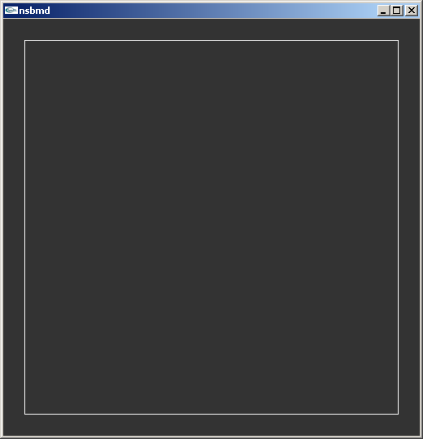
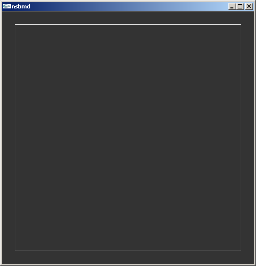
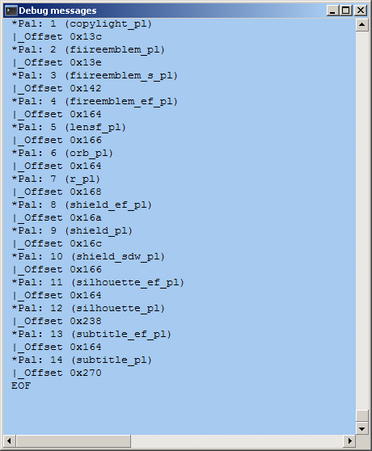
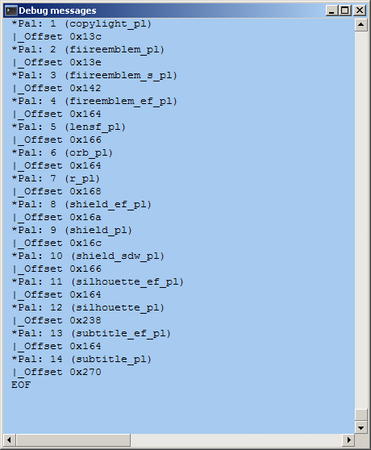

2.5 3d
Although some games on consoles are experimenting with vector images between tiles and 2d above and 3d covered in this section the vast majority of imagery use in games is covered. Note it is far from unheard of for games to use their 3d hardware to display 2d imagery and animation (several title screens on games have been seen to do this at various levels and even swapping out 3d for conventional 2d at points), it was already mentioned how several apparently 2d games have used 3d models in place of sprites (New Super Mario Brothers being noted for it) and others have augmented 2d imagery by doing things like having backgrounds rendered on the 3d hardware (various reasons but mainly that it really troubled the nascent DS emulation scene finds the first Castlevania game being noted for it).
For the most part this section will be very basic general concepts and DS specifics as the GBA lacks proper 3d hardware and anything there is likely to be prerendered and given to the 2d, a trick like isometric imagery or “mode 7” style techniques. This section will also assume a knowledge of GBA/DS 2d hardware and can be considered to follow on directly from it.
On computers and to a lesser extent consoles as well (although they use the hardware designed for it the software development kit developers will often still cook up their own programming methods for it) the two dominant methods for rendering 3d at time of writing, and for some time prior, are known as DirectX (a 3D technology from Microsoft and used in Windows and the xbox line of consoles) and OpenGL (a 3d technology of similar power and scope but as it is relatively open it is used in most other places as well as being available for use in Windows).
Lines are blurred between the hardware running things and the standards built on top of them; DirectX and OpenGL will put standards out which the hardware makers will build to and the hardware makers (and engine developers) will also have a say in what should go in the next versions of the DirectX and OpenGL standards with it only getting more blurred as those technologies also start to encompass general computing tasks (physics and such for games but owing to the way they are built they are also pretty good for aspects of high performance computing) with GPGPU being the term of choice to look up. Also in the case of DirectX the standard also defines input methods and helps with sound.
For the most part though the GBA and DS have all that 2d animation capabilities that consoles or 2d animation in general ever wanted (naturally support for larger amounts of sprites and such, being faster and operating at higher resolutions are desirable) the DS 3D systems are not that much like current 3d systems or even that much like past ones. Basically if you knew all that was to know about GBA 2d and underlying methods you could do 2d anything but knowing all there is to know about DS 3d and the underlying methods will leave a large gap in your knowledge (the idea of shaders, much of light reflection and some of the ideas that have led to shortcuts/approximations are at best going to be touched upon) although it should not do a disservice to any future intentions to learn 3d imagery. Learning 3d imagery is quite possible thanks to the internet and The Guerrilla CG Project put out a nice series that covers a lot of the basic concepts.
2.5.1 Basic 3d (bones, coordinates, keyframes)
You can do 3d imagery in a lot of different ways and for the most part 3d and the way 3d is animated is not really possible to separate. In practice it comes down to keyframes which have quite a lot in common with their 2d counterparts, morphing which is a hybrid of keyframes and the following and bones which as the name implies a bunch of jointed (often imaginary) lines running through a character that can be moved to provide animation (lesser systems using fewer bones and joints and winding up with things like hands always in a “pistol” grip).
Coordinates. For the most part the X, Y, Z coordinate (Cartesian) system appears once more although with two main refinements either in hardware or when doing maths on them.
- The ability to define a line with an angle and a length
- The ability to have a coordinate system within a coordinate system (helps when you have a complex shape and do not want to have to worry about recalculating a lot of points despite them not changing relative to each other).
Angles and lengths are quite useful as they can be manipulated somewhat more easily in some ways (the general idea is a line is defined at the origin with an angle to the given axes and a length and then maybe translated which gives the same information as a set of coordinates but allows easier rotation and more). Strictly speaking it is not used in the hardware but it often feeds into the multiple coordinate systems.
Multiple coordinate systems are extremely useful once you get past basic 3d for as mentioned they allow you to rotate an entire shape and not have to worry about recalculating all the components within it and deal with odd angles not to mention it allows for independent animation. For instance consider your hand when curling your arm it is at the end of your wrist but if you curl your arm leaving the hand in the starting position and then try to map the coordinates your hand just passed through it gets horribly complex despite your hand not changing position relative to your wrist.
In most games made points are defined which then become the corners, or more accurately vertices, of a model and lines drawn between them to make the image and those points moved accordingly (usually via the bones technique) although the latest techniques at time of writing are experimenting with a technology known as geometry shaders where new lines can be generated after an explosion or something. Back on topic most of the time this line is straight although some more advanced systems can define a type of line to make for a curved image (other times you see this it can be textures though) which usually falls under the remit of subdivision although there is a lighting trick known as Gouraud shading that achieves a similar effect.
Another type of imagery seen mainly in 3d scanning (medicine and parts of reverse engineering devices) and certain types of computer modelling (usually scientific in nature) is known as point cloud data where individual points are used and expanded from there. As you might imagine this can be very costly in terms of resources which for more real time use leads to voxels where a image is composed of small boxes or if you prefer the points themselves expanded so as to meet their neighbours and can be seen in voxelstein3d among other things.
Optional maths lecture on arrays/matrices Arrays are a concept that arises early in discussions of 3d and programming in general and as they have some very useful functions they never really go away. With one though you can effectively define in a few numbers a primitive anything really; a 3 x 3 array stores 9 values which works quite well when you have an X, Y and Z value and three sets of those can define a triangle (the building block of most 3d images) and more although the DS favours 4x4 for a lot of things (even if it turns those 4x4 into 3x3 by setting all the but the bottom right coordinate to 0 and the bottom right one to 1.0) and does not use them for defining vertices per se but the model format might well store things in one. The underlying maths is not hard it is just not as most people that have previously spent time doing algebra immediately expect. For some of the more in depth 2d affine transformations the same maths and many of the same concepts will arise.
Both GBAtek and Tonc have more on this with the latter aimed at the GBA 2d.
Still there are a few select concepts worth knowing
- Dot product
- Cross product
- Scalar multiplication
Depending upon your point of view scalars are either regular numbers or a 1x1 matrix.
\[To finish\]
The decimal point Floating point was covered back in the introduction and it is surely not hard to see what the ability to represent numbers after the decimal point is useful in 3d modelling. Combined with the need to do operations on lots of data all at once (a problem “solved” by the introduction of Single Instruction Multiple Data/ SIMD instructions) this is why 3d tends to have a piece of dedicated hardware inside the system and systems will have their performance measured in FLOPS (floating point operations per second). The DS specifically tends to eschew floating point in favour of fixed point using a variety of different formats for fixed point depending upon the operation.
A couple of different fixed point methods are used depending where you are
1bit sign, 3bit integer, 12bit fraction for a lot of the vectors (usually involving light and view)
1 bit sign + 3 bit integer + 6bit fractional for the 32 bit vertex set command (X,Y and Z in the same command each with 10 bits)
1bit sign + 9bit fractional part for the 64 bit vertex set command (X and Y in one 32 bit command, Z and wasted space in the next) and the commands that be used when reusing a previous coordinate (set X and Y but use the same Z or the other permutations of that concept).
2.5.2 Viewpoints
As well as lighting (covered elsewhere in this section) the idea of the viewpoint/camera is important where in 2d both those are something of an abstract concept at best. As the name implies it is the thing that ultimately decides what is rendered (3d learned early on you only need to render what the camera(s) can see) and more importantly can be used for animation (although in practice bugs in the DS hardware sometimes mean the camera is not animated but the world instead).
Additionally the DS supports a cutoff value so items beyond a certain distance will not be rendered (this helps the hardware by having less to do and likely the resulting image by having things that are only visible as single pixels not be rendered.
This is where matrices are most prevalent with the principle example being that of achieving a perspective view. The DS hardware supports either orthogonal rendering which is useful for 2d games like New Super Mario Brothers or games which use it for basic animations (certain RPG battle sequences) or rendering with perspective which is useful for first and third person type games where the camera is behind the player.
2.5.3 Textures and material colours
The earliest 3d just defined the points at corners (vertices) and lines (quite often green or grey) in a process known as wireframe; this is not used much any more with it tending to be reserved for cheat modes/bonus content, testing out the game itself and those creating the 3d content in the first place so in place of that there is material colours and textures. This being said many systems including the DS will still allow the “wireframe” to be coloured differently.
Further down the line there are also concepts like bump mapping where the illusion of surface roughness can be created by assuming another light source on the object, some systems will have hardware support for this but the DS does not and any you see will be the result of those responsible for 3d models and textures calculating such things ahead of time (if you plan to do any work with DS 3d the idea of precalculation is one that will appear again and again).
Material colours are just what they sound like and the 3d object will be coloured in according to a given value somewhere, with lighting and shadows it can look different and with each vertex in the case of the DS being able to be assigned a colour basic coloured models can be made however it tends to look a bit plain which brought in the idea of textures.
Textures are more or less 2d images placed over the 3d models or parts thereof which is more demanding than simple material colours. Unlike palettes in 2d you can map a texture to a part of a model and then between light/shadows, certain graphics modes, angles to the camera and fog a final image might be generated that is nothing like the texture colours. To this end with the pixels that make up a texture not being quite what it will be in the final image they are known as texels instead. Also available is alpha blending with the material colours so the texture and the material colours combine to create an image.
w8_bridge.nsbmd is a nice example here.
First image is what it looks like, second is without the texture.


Also worth noting is 3d has seen several titles allow the player to create their own textures with Mario Kart being on the more notable ones and other common ones include clothing games and games like the sims. There has been a bit of this in 2d as well but not half as much although for the most part textures will tend to manifest as 2d images anyway (certainly some editing has been done with 2d tile editors where necessary).
This brings a secondary issue up that developers and hackers alike have long had to think about when attempting to map a 2d image to a 3d object. Doing as such tends to make for some distortion so models will tend to be painted in 3d with a program and then converted to a 2d texture for storage; for more on that subject “Texture unwrapping” and “UV Mapping” are good search terms.
DS textures When being editing many will resemble custom size 2d formats. Equally much like 2d there are additional options and textures can be repeated, flipped and more.
GBAtek has more on the various methods and although at times they resemble things seen in the 2d palette/tile world other times see something quite custom in comparison.
2.5.4 Models
Basic constructions
There is the idea of a 3d primitive although this takes two forms with the likes of the DS and truly low level hardware and more general 3d modelling.
The DS hardware uses four concepts
- Triangle (three points defined anticlockwise)
- Quadrilateral (four points defined anticlockwise)
- Triangle strips (three points defined anticlockwise to start with and then either up down or if you prefer clockwise anticlockwise)
- Quadrilateral strips (four points defined “up and then down”)
Straight lines (line segments) are usually made by setting two of the points in a triangles to the same value. Equally although there is little in the way of support for or need for subdivision on the DS quite a few models eschewed the reliance on triangles that marks most game consoles apart from conventional 3d modelling which opts for quadrilaterals instead.
Although more conventional 3d modelling recognises those types as primitives (and if they are not primitives they are certainly fundamentals) on top of this and when dealing with slightly higher level ideas there are three other primitives
- Spheres
- Cylinders
- Cuboids
Either way when reverse engineering a model should developers have been kind enough to leave a selection of these primitives and when reverse engineering a format seeking these out and/or creating them is a useful step but more on that later.
Parent and child This is often where the idea of multiple coordinate systems comes into play.
The basic idea is there is a primary set of coordinates known as the world (although do note some call the entire level the world and it is a separate concept) and from here several extra coordinate systems can be defined and known as children; children can have further children but are each tied to the parent going right back to the world.
It becomes useful as having a large level and defining it only to want to move an item within it or worse it relative to another item it touches can get to be a nightmare very fast and even more so when there are say 300 points defining that item which all have to be accounted for possibly using a coordinate system with an origin several hundred of a given unit from the location of the model at the time.
2.5.5 Lighting/shadows
Where 2d is inherently assumed to be lit, indeed the whole colour scheme is designed around differences in brightness of the component colours, lighting and shadows as an extra concept do not really exist but most 3d systems will allow the phenomenon to me modelled and so lighting and shadows needs to be discussed.
Theory There are three types of light reflection known as specular, diffuse and emissive and the DS supports all three in hardware. Where light is blocked it makes shadows and where it is partially blocked it changes the colour of the light coming in but the DS has very limited support for both of these concepts.
Light There are the three sources and they all combine to make for images humans are used to seeing. Although the DS supports them most of it is precalculated/nice approximation. Approximation however is common in much of 3d regardless of where it is at.
Specular
This is the traditional concept of reflection where a single beam, provided it is below the critical angle for a material, will be reflected out.
Diffuse
This is the “scattered” light as often seen in crystalline structures but many materials will have a measure of diffuse reflection.
Emissive
As the name implies this is light generated by an object.
There are also three types of light source and although it is key to most light modelling which are a spherical source (light in every direction and dropping in intensity with distance), a conical source (light expanding as a cone with distance and also dropping with intensity) and a tube/parallel source (think laser beam where a single set of parallel light beams and not dropping in intensity with distance). They are not quite so key here as only the parallel sources are available to the DS although there can be multiple ones coming from various locations and are reflected accordingly. GBAtek also notes that the DS diffuse light engine is bugged and does not reflect properly if the camera is turned so in those cases diffuse is not used or the entire world is rotated instead.
Shadows If there is light there must be shadows to go with it. The DS lighting engine provides only light to the camera but it does have the ability to generate shadows as separate entities too. As mentioned in 2d the lack of shadows is fairly notable to the human eye but it can be placated by adding a simple circle shadow a lot of the time.
DS basics The DS supports light in the three forms although it is only reflected to the camera and not to other objects. As mentioned it does however provide the option to make shadows using a polygon so developers can precalculate shadows and add them to images and they often choose to also add a basic shadow (no shadow is quite noticeable but even a basic blob/circle shadow will help believability).
2.5.6 3d smoke and fog
Although in real life the fog and smoke are roughly treated as similar concepts as far as physics modelling is concerned in games the differences are quite extreme although developers have often been known to make one stand in for another.
Fog is most commonly associated with draw distance and indeed is usually there to make up for the hardware being unable to draw far enough ahead in real time although games like Silent Hill used it as part of the gameplay. It should be noted though that developers will also do things like make winding corridors, use a skybox, make things have trees/buildings either side of the level itself and use low light conditions to mask the inability to draw at long distances to say nothing of things like mip mapping and 2d overlays but more on that in animations and developer tricks in part 3.
Back on topic the DS hardware has a fog option as do most other 3d hardware/engines that aspire to be useful; it provides the ability to define fog colour (including alpha), location and density (typically to allow for things to fade out but not restricted to it).
Smoke Assuming it is not the result of the fog engine being used most smoke is a simple 2d animation maybe as a texture to an item with an animated texture or as conventional 2d imagery. On other computers there have been several smoke generation algorithms that are considerably less demanding but they are usually well out of reach of the DS and certainly not supported in hardware.
2.5.7 Animations
Basic animation was alluded to elsewhere but it takes three main forms.
Bones animation The traditional transformation types of rotation, scaling and translation return and provide most of the ideas here.
Texture animation Textures can be added, removed, have their level of alpha changed, combined with other textures (the result of an explosion say), have mirroring and expansion/scaling turned off and on more advanced systems which does include the DS the texture origin can be changed creating a similar effect to the scrolling BG from 2d animation. Also why go to the effort of uncoupling the wheel from a car and making it move when you can just rotate the texture of the wheel (or indeed just have a white shiny line move up and down or flicker).
Camera animation Much like real life although you can rotate the entire world to have something appear upside down it is usually easier to change turn the thing viewing it upside down and similarly for the other types of transformations. The do remember the bug with rotation on the DS and diffuse reflection (if a camera does a Dutch angle then it is probably the world that rotated instead).
Clipping Yet another area worthy of a section to itself. 3d by itself is just an imagery method and the camera itself can go anywhere within the space provided without restriction. Naturally this is not desirable for games so clipping comes into play and it can take many forms with some hardware and game engines even providing a measure of support for it. Sometimes clipping can be detected by using the 3d hardware itself similar to some level systems that use OAM for 2d but on the DS much of the time it is another file that will mirror the level (as a developer it is not terribly hard to generate one if you have the level sitting in front of you) will be made instead with a nice example being the KCL format used in many first party Nintendo games like the Mario Kart series.
2d overlays Although things can be done in 3d all proper 3d systems will work with the 2d hardware as well ranging from things as simple as skyboxes where the horizon is visible but rather than being a single colour there will be a 2d image placed on it of what the horizon would look like (or the sky above it) and as it is incredibly far away at this point. Some 2d engines go a step further than this and will replace actual objects in the distance with 2d representations and swap them out for 3d as the distance to them becomes less.
Others rather than creating a full model of a plant (traditionally quite a hard thing to do and demanding once it is done) will instead make a very thin box, make it transparent save for the plant and display that. An example of the idea can be seen in the map_point.nsbmd from New Super Mario Brothers on the DS.
In fact it is the little marker for the levels that have been done from the world map show as it is in the game, as wireframe and as it is without a texture. Note also the potential for a specular highlight which in in this case is done in textures.


Animations can also happen here and smoke or sparks can be simple 2d animations set to a given point.
Basically regardless of what is done 2d imagery plays a serious role in creating 3d worlds. Speaking of that it ends up as 2d in the case of the DS.
2.5.8 DS 3D hardware
GBAteka lot of detail on the subject but the basics behind the 3d hardware are worth knowing about.
The general idea is that there is a geometry engine and a rendering engine. The geometry engine is what the DS communicates with and it calculates the changes required before passing it to the rendering engine (a process triggered by a Swap Buffers command) which puts everything together and makes a picture out of the result or would but rather than an entire rendered frame (otherwise known as using a framebuffer) only 48 lines are rendered at a time and put into a cache.
Communication is typically done via write only registers starting at 4000330 hex and ending at 40006A4 hex, the display control register for 3d (DISP3DCNT) is however found at 4000060 hex and controls what modes are selected. Buried within the 3d IO range is the geometry command range which is either accessed directly or send a series of commands via the GXFIFO arrangement where geometry commands can be called by type instead.
Although some maths can be done it is a fairly low level arrangement and there is little in the way of high level constructs compared to say programming for a modern PC or console targeted 3d game engine where models themselves are essentially data types.
Matrices The DS emulators desmume and no$gba dev version will allow you to view the matrices.

PIC

PIC
Although there is a matrix stack which allows things to be swapped out in very short order there are four main ones that are useful at any one point in time. Once you know the Direction matrix refers to the light direction most are fairly self explanatory and if you recall affine transformation and mode7 from the 2d side of things most of it drops into place.
Still
Projection
handles the change between orthogonal and perspective view and although those are the main two it can handle everything in between.
Position
handles the ultimate locations of vertices
Direction
used for light and the testing vectors (light is the most commonly handled).
Texture
handles the texture mapping using the texture modes the hardware supports.
They are set by selecting the mode by writing to 4000440 hex aka the MTX_MODE register aka command 10h after which there are write matrix commands, read commands (for clipping), various multiplication and read as well as stack handling commands.
GBAtek covers the basics here.
2.5.9 The shift of the 3D to DS 2d
As mentioned the 3d hardware is not addressable directly in memory and it is not really tied to the screen rendering so the resulting frames from 3d rendering are turned over to the BG0 layer of engine A where it can have the usually selection of overlays and sprites done to it (many games will also render a 3d background to put behind the game). This being said the BG0 can be further transferred (with a speed penalty) and used elsewhere with the typical destination either being engine B or the capture hardware. By shifting layer priorities this is how a lot of ostensibly 2d games (like Castlevania) could use the 3d hardware to render a 3d background and have a conventional 2d game run on top of that.
2.5.10 NSBMD
NSBMD is the standard SDK 3D format and format used by a lot of games, that said some appeared before NSBMD became finalised and others like some Yu Gi Oh games have their own custom format. It has also been seen a couple of times with the textures mapped to a simple square in title screens and as mentioned elsewhere some ostensibly 2d platformers like New Super Mario Brothers used the 3d systems to in place of 2d sprites; note this is not Rare’s SNES Donkey Kong or Resident Evil style prerendering but actual 3d movement restricted to a 2d world. It also led to the introduction of “2.5D” but that is a different discussion.
The basic idea is that NSBMD is a 3d coordinate driven format with support for materials colours, textures, points to hook in for animations and not a lot else. It is sometimes flanked by the formats NSBTX (optional textures) and NSBCA (animations) where necessary and you should probably also remember the BMD or BMD0 is the actual model contained within (it shares a stamp with 3d formats for the gamecube and wii in this regard). Much like most things on the DS it is quite close to the hardware it ends up on in many ways.
Tools and specifications
- nsbmd tool
- kiwi.DS NSBMD specs
- lowlines specs (also NSBTX and NSBCA)
- lowlines’s the console tool
- tinke
- mkds course modifier
- NSBTXExtractor
Nsbmdtool is the tool created from the first attempts at reverse engineering the NSBMD format and although it lacks the ability to render quite a lot of imagery since discovered it has the ability to parse 3d models and give locations of the models, textures and similar ideas contained within the format which means it is still invaluable for editing models be they from new or old titles.
lowlines’ console tool is a newer attempt at reverse engineering the specifications and did better than nsbmdtool in a lot of cases.
Tinke includes a texture viewer and later versions include a model viewer as well as a great human readable version of the events.
MKDS course extractor includes NSMBD viewing features and some manipulation ability.
NSBTXExtractor is mainly aimed at texture extraction but it works on a lot of things and simply being able to extract textures helps in a lot of cases.
There are additional tools but they are usually game specific save editors and the like (mario kart emblem editors, Animal crossing texture editors in saves and such).
2.5.11 Basic NSBMD hacks
There are four main hacks done here although many of them translate to the other 3d formats as well.
- Filesystem hacks
- Texture modding hacks
- Scale and minor tweaks
- Full injection/modding hacks
Filesystem hacks are many and varied but were seen early on in the likes of the Mario Kart course hacks (it was mentioned elsewhere but Mario Kart used a KCL format for the track layout so unlike many games on more powerful machines simply editing the model does not do much) and several hacks since. Note that animations and textures can often be tied to a given model and odd things can happen if they are changed with some good examples being seen in some of the Super Smash Brothers hacks for the Wii. Occasionally injection from other games was attempted although it usually works better when it is for a similar franchise.
Texture modding hacks are not that common but equally they are not that hard. Generally a combination of something like nsbmdtool, tinke and looking at the specifications will allow you to direct a tile editor to the appropriate location, get the required dimensions (they are usually a simple multiple of 8 for each dimension but not always) and get the appropriate palette sorted which allows for conventional 2d editing. By similar logic palettes and any offsets for the textures can also be edited.
Scale and minor hacks. With 3d models being tied directly to the points that created them minor hacks are quite possible if the would be hacker can get a handle on the layout of the layout of the model in the file.
Full injection uses various techniques ranging from using leaked parts of the nitroSDK (parts were leaked and that included plugins for older versions of several industry standard 3d modelling programs such as 3ds max, maya and Softimage 3D/XSI which exported files to an intermediate format and conversion software for that intermediate) where others have done things like export images into a human readable format and between viewers and hex editing managed to change models enough to count as a full injection hack. At time of writing there is nothing resembling a high level editor of models themselves either standalone or via plugins.
2.5.12 Example of minor hack
The following is a quick example of a minor model tweak. “map_point.nsbmd” from New Super Mario Brothers will be returned to as it only being four vertices means less chance in being bogged down with a complex model. The model could be worked up from the specification but Tinke provides a nice human readable output
PIC
polygon0 is the item of choice and following it should be the commands. Note that as it is a flat square and thus shares some coordinates from point to point the smaller 3d hardware commands can be used to generate it, should the points be different on all three coordinates then longer commands will need be used.

PIC
Might as well change a single vertex to begin with so 01D9 was changed to 80
Wireframe of the modded version and the original version
 

With textures


2.5.13 Basic texture viewing hack
Textures are usually just stored as 2d images of some format, although do remember it might not be a colour format commonly seen in regular 2d editing (see the hardware notes for DS 3d textures). This is not usually so bad for much like editing without the proper palette by using a somewhat abstract method (if you know this green corresponds to that red in the image it is still possible to edit) a tile editor is little more than a hex editor that shows coloured pixels instead of letters and can arrange it in a few more orders, just make sure you have all unique colours if you do this or you risk getting quite confused. You could try exporting the texture in something to a bitmap format and importing the palette from that as well.
Game is Fire Emblem - Shin Monshou no Nazo Hikari to Kage no Eiyuu. It used (as did most DS fire emblem titles) 3d textures to help with 2d images.
File is title_logo.md (the series has the curious habit of using only the last two letters from the SDK extensions) from title12 directory.
NSBMDtool output
Nsbmdtool, despite being old and not working on a lot of NSBMD files, can provide some useful output.

PIC
Tinke output
Tinke provides two windows with useful output information.

PIC
 

PIC
Palette finding Plenty of information was given but no direct address of the palette in question.
The palette offset is given at 38 hex in the TEX0 section.

PIC
TEX0 starts at 1E30
Palette set to 0001 AA68 (within the tex0 section)
This gives 0001 C898 as the start of the palette section. It is not however the first palette in the palette section (it is the third although numbering starts at 0 so 2 is the actual number if using internal logic)
Tinke says 13E0 which needs a shift/divide by 2 to get 09F0. Adding that on gives
0001D288 hex
Crystaltile2 filtering Setting the appropriate locations as given in tinke and the nsbmdtool output.
The offset was given by nsbmdtool and tinke. 16 colours aka 4bpp.
PIC
Setting the palette.
PIC
From here it is so much basic image editing although do note the gradient. It looks like there is a periodicity in the X direction after a fashion (there is odd shading within the characters on the shorter widths) but vertical give or take shorter widths that trouble the X direction and the marks above the second and third from the right could be made to have a constant. Certainly though it would be quite possible to make a layer mask after recreating a more basic version of the gradient.
PIC
PIC
2.5.14 Command decoding aside
Returning to map_point.nsbmd from New Super Mario Brothers and some of the commands decoded as a quick example. Once again Tinke provides a nice human readable output
PIC
Being a single quadrilateral it is defined anticlockwise with the first command being point 0.
Point 0 Cmd 24 hex aka VTX_10 sets the vertex coordinate with 3 ten bit (signed bit, 3 bits, 6 bits fraction) with the upper 2 bits ignored.
19028270 hex
0001 1001 0000 0010 1000 0010 0111 0000 binary
Splitting it up
– (the two skipped bits)
0 110 010000 = + 6.25
0 010 100000 = + 2.5
1 001 110000 = - 1.75
Z
Y
X
Point 1 Command 25 hex aka VTX_XY is just two points with the Z point taken to be the same as the previous.
Full bits used (0 to 15 being X, 16 to 32 being Y)
signed, 12 bits given over to the fractional part
28006400 hex
Splitting it up
0010 1000 0000 0000 0110 0100 0000 0000 binary
0 010 1000 0000 0000 = + 2.5
0 110 0100 0000 0000 = + 6.25
Y
X
Point 2 Command 26 hex aka VTX_XZ assumes the Y point is the same as the previous and sets the X and Z. Same bit breakdown as the other two point commands.
9C006400 hex
1001 1100 0000 0000 0110 0100 0000 0000 binary
Splitting it up
1 001 1100 0000 0000 = - 1.75
0 110 0100 0000 0000 = + 6.25
Z
X
Point 3 Command 25 hex aka VTX_XY returns
28009c00 hex
0010 1000 0000 0000 1001 1100 0000 0000 hex
Splitting it up
0 010 1000 0000 0000 = + 2.5
1 001 1100 0000 0000 = - 1.75
Y
X
2.5.15 Non NSBMD
Although NSBMD is a pretty good format developers have attempted to make their own for various reasons including additional features the NSBMD format might well lack, what has been seen says most of the SDK for it requires the use of certain expensive (although industry standard) modelling packages, ports from other platforms (although no conventional high level formats of any form have been seen thus far and any that are seen are more likely to be a developer left extra) or that NSBMD was not finalised at this point (Metriod Prime Hunters being a good example of this and also one of the earlier tools for it in DSGraph).
As has been mentioned a few times and will be a few more before this is done the formats the end product will use in embedded systems will try to stay reasonably close to the hardware that will eventually use them (see things like custom audio formats on the DS tending to be wrappers for PCM or ADPCM audio which is what the DS hardware supports) which is why the hardware itself was covered and NSBMD given a section rather than it being the main focus of 3d hacking. It did not use standard 3d formats but model swapping was still able to be done.
Yu Gi Oh WC 2011 An attempt to rip the models from Yu-Gi-Oh World Championship 2011 soon revealed the game be one that did not use the NSBMD formats and what was there did not look especially like the sort of thing NSBMD is usually brought in to handle.
After breaking through the wrapper formats to reveal NARC and after extracting that many files were obtained with an example being
m8970_matanm.bin
m8970_mdl.bin
m8970_mdlanm.bin
m8970_texanm.bin
Most groups were just mdl and mdlanm files with the occasion extras having texanm and matanm which a quick playthrough of the game makes sense as not all creatures have complex animations. mdl presumably expanded to model and the others were likely model animation, texture animation and material animation. There was also a single visanm file. A strings search on the smallest file and other mdl files yielded some interesting results
m7091_mdl.bin was the smallest file and it had strings like pSphere and pCylinder inside it where others were named things like arm and wing as well as a lot of romanised Japanese names for similar things and 3d concepts (Blinn (phong) and Lambert among other things).
The smallest file and names pointed directly at developer left extras (circle and primitives) and where trying to figure out mappings that might be rotated, scaled and assigned assorted parent/child relationships and coordinates could be tricky knowing how a basic set of primitives worked could prove useful for further reverse engineering.
The format header was further reverse engineered.
\[To finish\]